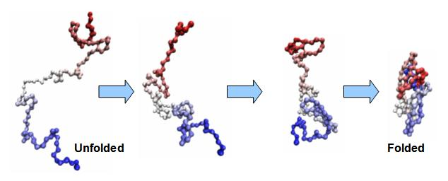
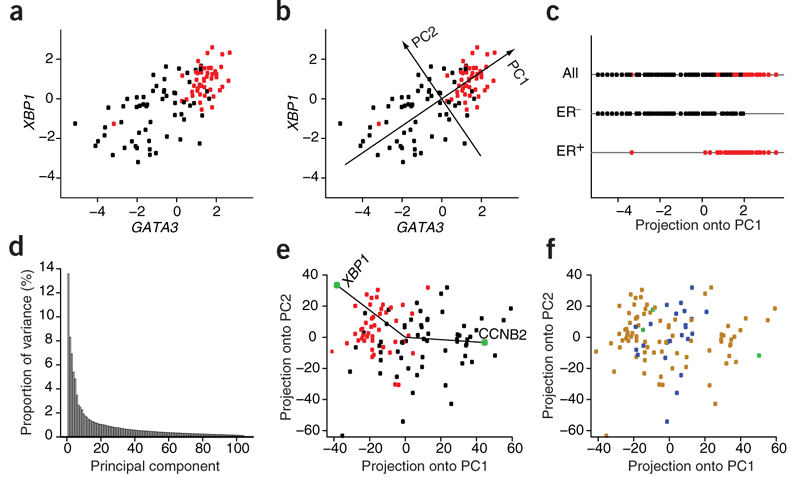

Applied Mathematics 205
Unit 0. Introduction
Lecturer: Petr Karnakov
August 31, 2022
Scientific Computing
Computation is now recognized as the "third pillar" of science (along with theory and experiment). Why?
- Practically relevant mathematical models do not have analytical solutions
- Large amounts of data need to be processed automatically
- Modern computers can handle large-scale problems
What is Scientific Computing
- Scientific computing is closely related to numerical analysis
- "Numerical analysis is the study of algorithms for the problems of continuous mathematics" [Nick Trefethen, SIAM News, 1992]
- Continuous mathematics involves real numbers as opposed to integers
-
Numerical analysis studies these algorithms
- Scientific computing applies them to practical problems
- Scientific computing is distinct from Computer Science, which focuses on discrete mathematics (e.g. graph theory)
Applications of
Scientific Computing
Cosmology
Cosmological simulations to test theories of galaxy formationBiology
-
Protein folding

-
Statistical analysis of gene expression

Computational Fluid Dynamics
- CFD simulations replace or complement wind-tunnel experiments
- Computational geometry is easier to tweak than a physical model
- Simulations provide the entire flow field, not available experimentally
Geophysics
- Experimental data is only available on Earth's surface
- Simulations help to test models of the interior
Calculation of $\pi$
Calculation of $\pi$
- $\pi$ is the ratio of a circle's circumference to its diameter
- Babylonians (1900 BC): $3.125$
-
From the Old Testament (1 Kings 7:23):
And he made the molten sea of ten cubits from brim to brim, round in compass, and the height thereof was five cubits; and a lines of thirty cubits did compass it round about
Implies $\pi\approx 3$ - Egyptians (1850 BC): $(\frac{16}{9})^2\approx 3.16$
Calculation of $\pi$
-
Archimedes (287-212 BC) bounded $\pi$ by perimeters of regular polygons:
inscribed and superscribed

- For 96-sided polygon: $\frac{223}{71} < \pi < \frac{22}{7}$ (interval length: 0.00201)
- Example of an infinite process converging to the exact solution
- Provides both the estimate and error bounds
Calculation of $\pi$
- James Gregory (1638-1675) discovers the arctangent series $$\arctan x = x - \frac{x^3}{3} + \frac{x^5}{5} - \frac{x^7}{7} + \ldots$$
- Setting $x=1$ gives $$\frac{\pi}{4}=1 - \frac{1}{3} + \frac{1}{5} - \frac{1}{7} + \ldots$$ but it converges very slowly
Calculation of $\pi$
- The arctangent series converges faster for points closer to 0 $$\arctan x = x - \frac{x^3}{3} + \frac{x^5}{5} - \frac{x^7}{7} + \ldots$$
- John Machin (1680-1752) observed that $$\frac{\pi}{4} = 4 \arctan \frac{1}{5} - \arctan \frac{1}{239}$$ and computed 100 digits of $\pi$
-
Derivation
- $\tan \alpha = \frac{1}{5}$
- $\tan 2\alpha = \frac{2\tan \alpha}{1-\tan^2 \alpha} = \frac{5}{12}$
- $\tan 4\alpha = \frac{2\tan 2\alpha}{1-\tan^2 2\alpha} = \frac{120}{119}$
- $\tan \left(4\alpha - \frac{\pi}{4} \right) = \frac{\tan 4\alpha - 1}{1+\tan 4\alpha} = \frac{1}{239}$
Calculation of $\pi$
Users of Manchin's formula
| 1706 | John Machin | 100 digits |
| 1719 | Thomas de Lagny | 112 digits |
| 1739 | Matsunaga Ryohitsu | 50 digits |
| 1794 | Georg von Vega | 140 digits |
| 1844 | Zacharias Dase | 200 digits |
| 1847 | Thomas Clausen | 248 digits |
| 1853 | William Rutherford | 440 digits |
| 1876 | William Shanks | 707 digits |
Sources of Error
in Scientific Computing
Sources of Error in Scientific Computing
- There are several sources of error in solving real-world problems
- Some are beyond our control
(e.g. uncertainty in modeling parameters or initial conditions) - Some are introduced by our numerical approximations
- Truncation/discretization error:
Objects from continuous mathematics need to be discretized
(finite differences, truncated infinite series...) - Rounding error:
Computers work with finite precision arithmetic
- Truncation/discretization error:
Sources of Error in Scientific Computing
- It is crucial to understand and control the error introduced by numerical approximation, otherwise the results might be garbage
- This is a major part of Scientific Computing, called error analysis
- Error analysis becomes more important for larger scale problems as errors accumulate
- Most people are familiar with rounding error,
but discretization error is far more important in practice
Discretization Error vs. Rounding Error
- Consider a finite difference approximation to $f'(x)$ $$f_\text{diff}(x;h) = \frac{f(x+h) - f(x)}{h}$$
- From Taylor series (for $\theta \in [x,x+h])$ $$f(x+h) = f(x) + hf'(x) + f''(\theta)h^2/2$$ we see that $$f_\text{diff}(x;h) = \frac{f(x+h) - f(x)}{h} = f'(x) + f''(\theta)h/2$$
- Suppose $|f''(\theta)| \leq M$, then bound on discretization error is $$|f'(x) - f_\text{diff}(x;h)| \leq Mh/2$$
Discretization Error vs. Rounding Error
- But we can’t compute $f_\text{diff}(x;h)$ in exact arithmetic
- Let $\tilde{f}_\text{diff}(x;h)$ denote finite precision approximation of $f_\text{diff}(x;h)$
- Numerator of $\tilde{f}_\text{diff}$ introduces rounding error $\lesssim \epsilon |f(x)|$
(on modern computers $\epsilon \approx 10^{-16}$, will discuss this shortly) - Hence we have the rounding error $$\big| f_\text{diff}(x;h) - \tilde{f}_\text{diff}(x;h)\big| \lesssim \left| \tfrac{f(x+h) - f(x)}{h} - \tfrac{f(x+h) - f(x) + \epsilon f(x)}{h} \right| = \epsilon |f(x)|/h$$
Discretization Error vs. Rounding Error
- Then we can bound the total error (discretization and rounding)
$$ \begin{aligned} |f'(x) - \tilde{f}_\text{diff}(x;h)| &= |f'(x) - f_\text{diff}(x;h) + f_\text{diff}(x;h) - \tilde{f}_\text{diff}(x;h)| \\ &\leq |f'(x) - f_\text{diff}(x;h)| + |f_\text{diff}(x;h) - \tilde{f}_\text{diff}(x;h)| \\ &\leq {\color{green}Mh/2 + \epsilon |f(x)|/h}\end{aligned} $$ - Since $\epsilon$ is so small, here we expect discretization error to
dominate
until $h$ gets sufficiently small
Discretization Error vs. Rounding Error
- Consider $f(x) = \exp(5x)$.
Error of $f_\text{diff}(x,h)$ at $x=1$ as function of $h$
Exercise:
Use calculus to find local minimum of error bound
$Mh/2 + \epsilon |f(x)|/h$
as a function of $h$ to see why minimum occurs at $h \approx 10^{-8}$
Discretization Error vs. Rounding Error
- Note that in the finite difference example,
we observe error growth due to rounding as $h \to 0$ - A more common situation (that we’ll see in Unit 1, for example)
is that the error plateaus at around $\epsilon$ due to rounding error
Absolute vs. Relative Error
- Recall our bound $|f'(x) - \tilde{f}_\text{diff}(x;h)| \leq Mh/2 + \epsilon |f(x)|/h$
- This is a bound on Absolute Error $$\text{Absolute Error} = \text{true value} - \text{approximate value}$$
- Generally more interesting to consider Relative Error $$\text{Relative Error} \equiv \frac{\text{Absolute Error}}{\text{true value}}$$
- Relative error is a dimensionless quantity
- If unknown, true value is replaced with an estimate
Absolute vs. Relative Error
- For our finite difference example, plotting relative error just rescales the error values
Convergence Plots
- We have shown several plots of error as a function of a discretization parameter
- In general, these plots are very important in scientific computing to demonstrate that a numerical method is behaving as expected
- To display convergence data in a clear way, it is important to use appropriate axes for our plots
Convergence Plots
- Most often we will encounter algebraic convergence, where error decreases as $C h^q$ for some $C,q\in \mathbb{R}$
- Algebraic convergence: If $E=C h^q$, then $$\log E = \log C + q \log h$$
- Plotting algebraic convergence on log–log axes asymptotically yields a straight line with slope $q$
- Hence a good way to deduce the algebraic convergence rate is by comparing error to $C h^q$ on log–log axes
Convergence Plots
- Sometimes we will encounter exponential convergence, where error decays as $C e^{-q N}$ as $N \to \infty$
- If $E=C e^{-q N}$ then $$\log E = \log C - q N$$
- Hence for exponential convergence, better to use log-linear axes
(like the previous “error plateau” plot)
Numerical Sensitivity
- In practical problems we will always have input perturbations
(modeling uncertainty, rounding error) - Let $y = f(x)$, and denote perturbed input $\hat x = x + \Delta x$
- Also, denote perturbed output by $\hat y = f(\hat x)$, and $\hat y = y + \Delta y$
- The function $f$ is sensitive to input perturbations if $\Delta y \gg \Delta x$
- This is sensitivity inherent in $f$, independent of any approximation (though a numerical approximation $\hat f \approx f$ can exacerbate sensitivity)
Sensitivity and Conditioning
- For a sensitive problem,
small input perturbation leads to large output perturbation - Can be made quantitative with the concept of (relative) condition number $$\text{Condition number} = \frac{|\Delta y/y|}{|\Delta x/x|}$$
-
Problems with $\text{Condition number} \gg 1$ are called ill-conditioned.
In such problems, small input perturbations are amplified
Sensitivity and Conditioning
- Condition number can be analyzed for various problem types (independent of algorithm used to solve the problem). Examples:
- Function evaluation, $y = f(x)$
- Matrix multiplication, $Ax = b$ (solve for $b$ given $x$)
- Linear system, $Ax = b$ (solve for $x$ given $b$)
Conditioning: Function Evaluation
- Problem: evaluate function, $y=f(x)$
- Perturbed problem: $y+\Delta y=f(x + \Delta x)$
- Change in $x$: $\;\;\Delta x$
- Change in $y$: $\;\;\Delta y \approx f'(x)\Delta x$
- Condition number is the ratio of relative changes $$\kappa = \frac{f'(x)\Delta x / f(x)}{\Delta x / x}= \frac{f'(x)x}{f(x)} $$
Conditioning: Matrix Multiplication
- Problem: multiply matrix and vector, $b=Ax$
- Perturbed problem: $b + \Delta b = A(x+\Delta x) \implies \Delta b=A\Delta x$
- Condition number is $$\kappa =\frac{\|\Delta b\|/\|b\|}{\|\Delta x\|/\|x\|} =\frac{\|A\Delta x\|}{\|\Delta x\|} \, \frac{\|x\|}{\|Ax\|} =\frac{\|A\Delta x\|}{\|\Delta x\|} \, \frac{\|A^{-1}b\|}{\|b\|}$$
- Matrix norm $$ \|A\| = \max_{v\neq 0} \frac{\|Av\|}{\|v\|} $$
- Condition number $\kappa(A)$ from linear algebra is an upper bound for $\kappa$ $$ \kappa =\frac{\|A\Delta x\|}{\|\Delta x\|} \, \frac{\|A^{-1}b\|}{\|b\|} \leq \|A\|\,\|A^{-1}\| = \kappa(A)$$
Conditioning: Linear System
- Problem: solve linear system $Ax=b$
- Perturbed problem: $A(x+\Delta x)=b + \Delta b\implies A\Delta x = \Delta b$
- Condition number is $$\kappa =\frac{\|\Delta x\|/\|x\|}{\|\Delta b\|/\|b\|} =\frac{\|\Delta x\|}{\|A\Delta x\|} \, \frac{\|Ax\|}{\|x\|} =\frac{\|A^{-1}\Delta b\|}{\|\Delta b\|} \, \frac{\|Ax\|}{\|x\|}$$
- Matrix norm $$ \|A\| = \max_{v\neq 0} \frac{\|Av\|}{\|v\|} $$
- Condition number $\kappa(A)$ from linear algebra is an upper bound for $\kappa$ $$ \kappa =\frac{\|A^{-1}\Delta b\|}{\|\Delta b\|} \, \frac{\|Ax\|}{\|x\|} \leq \|A^{-1}\|\,\|A\| = \kappa(A)$$
Exercise: Diagonal Matrix
\[A = \left(\begin{matrix} d_1 & 0 & 0\\ 0 & d_2 & 0\\ 0 & 0 & d_3 \end{matrix}\right) \]- Matrix norm $$\|A\|= \max_{v\neq 0} \frac{\|Av\|}{\|v\|} = \htmlClass{fragment fade-in}{\max({|d_1|,|d_2|,|d_3|})}$$
- Condition number $$\kappa(A) = \|A\| \|A^{-1}\| = \htmlClass{fragment fade-in}{\frac{\max({|d_1|,|d_2|,|d_3|})}{\min({|d_1|,|d_2|,|d_3|})}}$$
Stability of an Algorithm
- In practice, we solve problems by applying a numerical method to a mathematical problem, e.g. apply Gaussian elimination to $Ax = b$
- To obtain an accurate answer, we need to apply a stable numerical method to a well-conditioned mathematical problem
- Question: What do we mean by a stable numerical method?
- Answer: Roughly speaking, the numerical method doesn’t accumulate error (e.g. rounding error) and produce garbage
- We will make this definition more precise shortly, but first, we discuss rounding error and finite-precision arithmetic
Code Examples
- From here on, a number of code examples will be provided
- They will be available via Git repository
github.com/pkarnakov/am205 - Git is one example of version control software, which tracks the changes of files in a software project. Features:
- Compare files to any previous version
- Merge changes in the same files by multiple people
- Not suitable for binary files (Word, PDF, images, videos, etc)
- Note: Avoid storing large binary files in repositories.
They cannot be removed without rewriting history
Git
- Git can be installed as a command-line utility on all major systems.
- For authentication, you will need to add an SSH key to your profile at code.harvard.edu
- Follow this guide to generate an SSH key
- To download a copy of the repository, use
git clone git@code.harvard.edu:AM205/public.git - Then, at later times, you can type
to obtain any updated files. Graphical interfaces for Git are also availablegit pull
Finite-Precision Arithmetic
- Key point: we can only represent a finite and discrete subset of the real numbers on a computer.
- The standard approach in modern hardware is to use binary floating point numbers (basically “scientific notation” in base 2), $$\begin{aligned} x&= \pm (1+d_12^{-1} + d_2 2^{-2} + \ldots + d_p 2^{-p} ) \times 2^E \\ &= \pm(1.d_1d_2\ldots d_p)_2 \times 2^E \end{aligned}$$
Finite-Precision Arithmetic
- We store \underbrace{\pm}_{\text{1 sign bit}} \qquad \underbrace{d_1,d_2,\ldots,d_p}_{\text{$p$ mantissa bits}} \qquad \underbrace{E}_{\text{exponent bits}}
- Note that the term bit is a contraction of “binary digit”
- This format assumes that d_0=1 to save a mantissa bit,
but sometimes d_0=0 is required, such as to represent zero. - The exponent resides in an interval L\le E\le U.
IEEE Floating Point Arithmetic
- Universal standard on modern hardware is IEEE floating point arithmetic (IEEE 754), adopted in 1985
- Development led by Prof. William Kahan (UC Berkeley), who received the 1989 Turing Award for his work
total bits $p$ $L$ $U$ IEEE single precision 32 23 -126 127 IEEE double precision 64 52 -1022 1023 - Note that single precision has 8 exponent bits but only 254 (not 256) different values of $E$, since some exponent bits are reserved to represent special numbers
Exceptional Values
- These exponents are reserved to indicate special behavior, including values such as Inf and NaN:
- Inf = “infinity”, e.g. $1/0$ (also $-1/0 = -\text{Inf}$)
- NaN = “not a number”, e.g. $0/0$, $\text{Inf}/\text{Inf}$
IEEE Floating Point Arithmetic
- Let $\mathbb{F}$ denote the floating point numbers. Then $\mathbb{F}\subset \mathbb{R}$ and $|\mathbb{F}|<\infty$.
- Question: How should we represent a real number $x$, which is not in $\mathbb{F}$?
- Answer: There are two cases to consider:
- Case 1: $x$ is outside the range of $\mathbb{F}$ (too small or too large)
- Case 2: The mantissa of $x$ requires more than $p$ bits.
IEEE Floating Point Arithmetic
Case 1: $x$ is outside the range of $\mathbb{F}$ (too small or too large)
- Too small:
- Smallest positive value that can be represented in
double precision is \approx 10^{-323} - For a value smaller than this we get underflow,
and the value typically set to 0
- Smallest positive value that can be represented in
- Too large:
- Largest x\in \mathbb{F} (E=U and all mantissa bits are 1)
is approximately $2^{1024}\approx 10^{308}$ - For values larger than this we get overflow,
and the value typically gets set to Inf
- Largest x\in \mathbb{F} (E=U and all mantissa bits are 1)
IEEE Floating Point Arithmetic
Case 2: The mantissa of $x$ requires more than $p$ bits
- Need to round $x$ to a nearby floating point number
- Let $\texttt{round}:\mathbb{R}\to \mathbb{F}$ denote our rounding operator
- There are several different options:
round up, round down, round to nearest, etc - This introduces a rounding error
- absolute rounding error $x-\texttt{round}(x)$
- relative rounding error $(x-\texttt{round}(x))/x$
Machine Precision
- It is important to be able to quantify this rounding error — it’s related to machine precision, often denoted as $\epsilon$ or $\epsilon_\text{mach}$
- $\epsilon$ is the difference between 1 and the next floating point number after 1, therefore $\epsilon = 2^{-p}$
- In IEEE double precision, $\epsilon = 2^{-52} \approx 2.22 \times 10^{-16}$
Rounding Error
- Let $x=(\htmlClass{color2}{1.d_1d_2\ldots d_p}\htmlClass{color0}{d_{p+1}})_2 \times 2^E \in \mathbb{R}_+$.
- Then $x\in[x_-,x_+]$ for $x_-,x_+\in \mathbb{F}$, where
$x_-=(\htmlClass{color2}{1.d_1d_2\ldots d_p})_2 \times 2^E$ and $x_+ = x_- + \epsilon \times 2^E$. - $\texttt{round}(x)=x_-$ or $x_+$ depending on the rounding rule,
and hence $|\texttt{round}(x)-x|<\epsilon\times 2^E$ - Also, $|x| \ge 2^E$
Rounding Error
- Hence we have a relative error of less than $\epsilon$ $$\htmlClass{color1}{\left|\frac{\texttt{round}(x)-x}{x}\right| < \epsilon}$$
- Another standard way to write this is $$\htmlClass{color2}{\texttt{round}(x) = x \left( 1 + \frac{\texttt{round}(x)-x}{x} \right) = x(1+\delta)}$$ where $\delta = \frac{\texttt{round}(x)-x}{x}$ and $|\delta|<\epsilon$
- Hence rounding gives the correct answer to within a factor of $1+\epsilon$
Floating Point Operations
- An arithmetic operation on floating point numbers is called a “floating point operation”: $\oplus$, $\ominus$, $\otimes$, $\oslash$ versus $+$, $-$, $\times$, $/$
- Computer performance is often measured in Flop/s:
number of Floating Point OPerations per second - Supercomputers are ranked based on number of flops achieved in the LINPACK test, which solves dense linear algebra problems
- Currently, the fastest computers are in the 100 petaflop range:
1 petaflop = $10^{15}$ floating point operations per second
Supercomputers
See www.top500.org for an up-to-date list of the fastest supercomputers
$R_\mathrm{max}$ is from LINPACK, $R_\mathrm{peak}$ is from clock rate
Supercomputers
Modern supercomputers are very large, link many processors together with fast interconnect to minimize communication time
Frontier at Oak Ridge is 1102 PFlop/s
Floating Point Operation Error
- IEEE standard guarantees that for $x, y \in \mathbb{F}$ $$x \circledast y = \texttt{round}( x \ast y)$$ where $\ast$ and $\circledast$ represent one of the four arithmetic operations
- Hence from our discussion of rounding error, it follows that for $x, y \in \mathbb{F}$ $$x\circledast y = ( x\ast y)(1+\delta)$$ for some $|\delta| < \epsilon$
Loss of Precision
- Machine precision can be tested. See [unit0/precision.py]
- Since $\epsilon$ is so small, we typically lose very little precision per operation
IEEE Floating Point Arithmetic
For more detailed discussion of floating point arithmetic, see:
Michael L. Overton. Numerical Computing with IEEE Floating Point Arithmetic. SIAM, 2001 10.1137/1.9780898718072
Numerical Stability of an Algorithm
- We have discussed rounding for a single operation, but in AM205 we will study numerical algorithms that require many operations
- For an algorithm to be useful, it must be stable in the sense that rounding errors do not accumulate and result in “garbage” output
- More precisely, numerical analysts aim to prove backward stability:
The method gives the exact answer to a slightly perturbed problem - For example, a numerical method for solving $Ax = b$ should give the exact answer for $(A+\Delta A)x = (b+\Delta b)$ for small $\Delta A$, $\Delta b$
Numerical Stability of an Algorithm
- We note the importance of conditioning:
backward stability doesn’t help us if the mathematical problem is ill-conditioned - For example, if $A$ is ill-conditioned then a backward stable algorithm for solving $Ax=b$ can still give large error for x
- Backward stability analysis is a deep subject which we do not cover in detail in AM205
- We will, however, compare algorithms with different stability properties and observe the importance of stability in practice